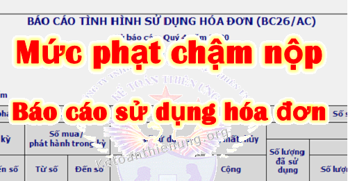

Chậm nộp báo cáo sử dụng hóa đơn bị phạt bao nhiêu? Kế toán Diệu Tâm xin trích quy định về mức phạt chậm nộp báo cáo tình hình sử dụng hóa đơn mới nhất:
I. Mức phạt chậm nộp báo cáo tình hình sử dụng hóa đơn:
Căn cứ theo Điều 29 Nghị định 125/2020/NĐ-CP quy định Xử phạt hành vi vi phạm quy định về lập, gửi thông báo, báo cáo về hóa đơn cụ thể như sau:
| Mức phạt | Hành vi vi phạm - Số ngày chậm nộp |
| 1. Phạt cảnh cáo |
- Đối với hành vi nộp thông báo, báo cáo về hóa đơn quá thời hạn quy định từ 01 ngày đến 05 ngày, kể từ ngày hết thời hạn theo quy định mà có tình tiết giảm nhẹ. |
| 2. Phạt tiền từ 1.000.000 đồng đến 3.000.000 đồng |
- Đối với một trong các hành vi sau đây: a) Nộp thông báo, báo cáo về hóa đơn quá thời hạn quy định từ 01 ngày đến 10 ngày, kể từ ngày hết thời hạn theo quy định, trừ trường hợp quy định tại khoản 1 Điều này; b) Lập sai hoặc không đầy đủ nội dung của thông báo, báo cáo về hóa đơn theo quy định gửi cơ quan thuế. Trường hợp tổ chức, cá nhân tự phát hiện sai sót và lập lại thông báo, báo cáo thay thế đúng quy định gửi cơ quan thuế trước khi cơ quan thuế, cơ quan có thẩm quyền ban hành quyết định thanh tra thuế, kiểm tra thuế tại trụ sở người nộp thuế thì không bị xử phạt. |
| 3. Phạt tiền từ 2.000.000 đồng đến 4.000.000 đồng |
- Đối với hành vi nộp thông báo, báo cáo về hóa đơn gửi cơ quan thuế quá thời hạn quy định từ 11 ngày đến 20 ngày, kể từ ngày hết thời hạn theo quy định. |
| 4. Phạt tiền từ 4.000.000 đồng đến 8.000.000 đồng |
- Đối với hành vi nộp thông báo, báo cáo về hóa đơn gửi cơ quan thuế quá thời hạn quy định từ 21 ngày đến 90 ngày, kể từ ngày hết thời hạn theo quy định. |
| 5. Phạt tiền từ 5.000.000 đồng đến 15.000.000 đồng |
- Đối với một trong các hành vi sau đây: a) Nộp thông báo, báo cáo về hóa đơn gửi cơ quan thuế quá thời hạn quy định từ 91 ngày trở lên, kể từ ngày hết thời hạn theo quy định; b) Không nộp thông báo, báo cáo về hóa đơn gửi cơ quan thuế theo quy định. |
| - Biện pháp khắc phục hậu quả: Buộc lập, gửi thông báo, báo cáo về hóa đơn đối với hành vi quy định tại điểm b khoản 2 và điểm b khoản 5 nêu trên. | |
--------------------------------------------------------------------------------
II. Nguyên tắc xử phạt vi phạm hành chính về hóa đơn:
Căn cứ theo Nghị định 125/2020/NĐ-CP quy định cụ thể như sau:
1. Hình thức xử phạt chính:
a) Phạt cảnh cáo áp dụng đối với hành vi vi phạm thủ tục hóa đơn không nghiêm trọng, có tình tiết giảm nhẹ và thuộc trường hợp áp dụng hình thức xử phạt cảnh cáo theo quy định tại Nghị định này.
b) Phạt tiền tối đa không quá 100.000.000 đồng đối với tổ chức thực hiện hành vi vi phạm hành chính về hóa đơn. Phạt tiền tối đa không quá 50.000.000 đồng đối với cá nhân thực hiện hành vi vi phạm hành chính về hóa đơn.
2. Tổ chức, cá nhân thực hiện nhiều hành vi vi phạm hành chính thì bị xử phạt về từng hành vi vi phạm, trừ các trường hợp sau:
- Trường hợp cùng một thời điểm người nộp thuế chậm nộp nhiều thông báo, báo cáo cùng loại về hóa đơn thì người nộp thuế bị xử phạt về một hành vi chậm nộp thông báo, báo cáo về hóa đơn có khung phạt tiền cao nhất trong số các hành vi đã thực hiện quy định tại Nghị định này và áp dụng tình tiết tăng nặng vi phạm nhiều lần;
3. Nguyên tắc áp dụng mức phạt tiền
- Khi xác định mức phạt tiền đối với người nộp thuế vi phạm vừa có tình tiết tăng nặng, vừa có tình tiết giảm nhẹ thì được giảm trừ tình tiết tăng nặng theo nguyên tắc một tình tiết giảm nhẹ được giảm trừ một tình tiết tăng nặng.
- Các tình tiết giảm nhẹ hoặc tăng nặng đã được sử dụng để xác định khung tiền phạt thì không được sử dụng khi xác định số tiền phạt cụ thể như sau:
+) Khi phạt tiền, mức phạt tiền cụ thể đối với một hành vi vi phạm thủ tục hóa đơn là mức trung bình của khung phạt tiền được quy định đối với hành vi đó.
+) Nếu có tình tiết giảm nhẹ, thì mỗi tình tiết được giảm 10% mức tiền phạt trung bình của khung tiền phạt nhưng mức phạt tiền đối với hành vi đó không được giảm quá mức tối thiểu của khung tiền phạt;
+) Nếu có tình tiết tăng nặng thì mỗi tình tiết tăng nặng được tính tăng 10% mức tiền phạt trung bình của khung tiền phạt nhưng mức phạt tiền đối với hành vi đó không được vượt quá mức tối đa của khung tiền phạt.
Ví dụ: Hạn nộp Báo cáo sử dụng hóa đơn Qúy II/2021 là ngày 30/7/2021.
- Nhưng đến ngày 15/8/2021 DN bạn mới nộp. -> Như vậy là chậm nộp 15 ngày (Tính từ ngày 1/8/2021)
=> Mức phạt chậm nộp báo cáo tình hình sử dụng hóa đơn sẽ là khung từ 2.000.000 đồng đến 4.000.000 đồng. => Mức trung bình của khung sẽ là: 3.000.000.
4. Trường hợp không xử phạt vi phạm hành chính về hóa đơn:
- Người nộp thuế chậm thực hiện thủ tục hóa đơn bằng phương thức điện tử do sự cố kỹ thuật của hệ thống công nghệ thông tin được thông báo trên Cổng thông tin điện tử của cơ quan thuế thuộc trường hợp thực hiện hành vi vi phạm do sự kiện bất khả kháng quy định tại khoản 4 Điều 11 Luật Xử lý vi phạm hành chính. -> Thì Không xử phạt vi phạm hành chính về hóa đơn.
-----------------------------------------------------------------------------------
III. Thời hạn nộp Báo cáo tình hình sử dụng hóa đơn:
Căn cứ theo điều 27 Thông tư số 39/2014/TT-BTC quy định cụ thể như sau:
Thời hạn nộp Báo cáo tình hình sử dụng hóa đơn theo Tháng:
- Chậm nhất là ngày 20 của tháng tiếp theo.
Thời hạn nộp Báo cáo tình hình sử dụng hóa đơn theo Qúy:
- Quý I nộp chậm nhất là ngày 30/4;
- Quý II nộp chậm nhất là ngày 30/7.
- Quý III nộp chậm nhất là ngày 30/10.
- Quý IV nộp chậm nhất là ngày 30/01 của năm sau.
Xem thêm: Lịch nộp các loại báo cáo thuế
- Nếu DN đã làm thông báo phát hành hóa đơn (hoặc đã mua hóa đơn bán hàng của Cơ quan thuế) thì trong kỳ dù không sử dụng hóa đơn -> Vẫn phải nộp Báo cáo tình hình sử dụng hóa đơn, ghi số lượng hóa đơn sử dụng bằng không (=0)
- Nếu DN chưa làm Thông báo phát hành hóa đơn -> Thì không phải nộp Báo cáo tình hình sử dụng hóa đơn.
Việc xác định Doanh nghiệp phải làm Báo cáo tình hình sử dụng hóa đơn theo quý hay tháng: => Các bạn xem tại đây nhé: Hướng dẫn lập báo cáo tình hình sử dụng hóa đơn.
-------------------------------------------------------------------------------------------------------
Chúc các bạn làm tốt công việc kế toán!
Các bạn muốn học cách xử lý hóa đơn, kê khai thuế hàng tháng, quý; Cách xác định khoản chi phí được trừ không được trừ; Quyết toán thuế cuối năm ... Có thể tham gia Khóa học thực hành kế toán thuế chuyên sâu trên chứng từ thực tế.
--------------------------------------------------------------------------------------------------
